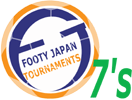

Paul Adamson Memorial Trophy
- When: Sunday July 24th 2005
- Time: 10:00am - 5:00pm
- Where: OiFuto
- Teams: Teams will register up to 11 players. On-field will use 7 players incl GK. Other 4 players may sub on and off multiple times
- Format: League followed by knockout matches. (To be determined)
- Cost: Team registration will be ¥15,000.
- Registration Period: Registration will end July 14th, to register, please
CONTACT US.
- Special Rules: 2 pitches will be set up, across the normal pitch. Regular FIFA rules will be played but no off-sides. Games will be 10 minutes each way.
- Teams entering to date: FRANCE FC, YC&AC, SWISS, SHANE FC, VAGABONDS, AFC WANDERERS, SAITAMA JETS, SOUTHEND UNITED JAPAN, NOVA FC, BARCAP FC, HIBS, SANTOS FC, YOKOTA UNITED, SALA FC, SCHOOLBOY ERRORS FC, MARITIZIO FC.
|
|
|